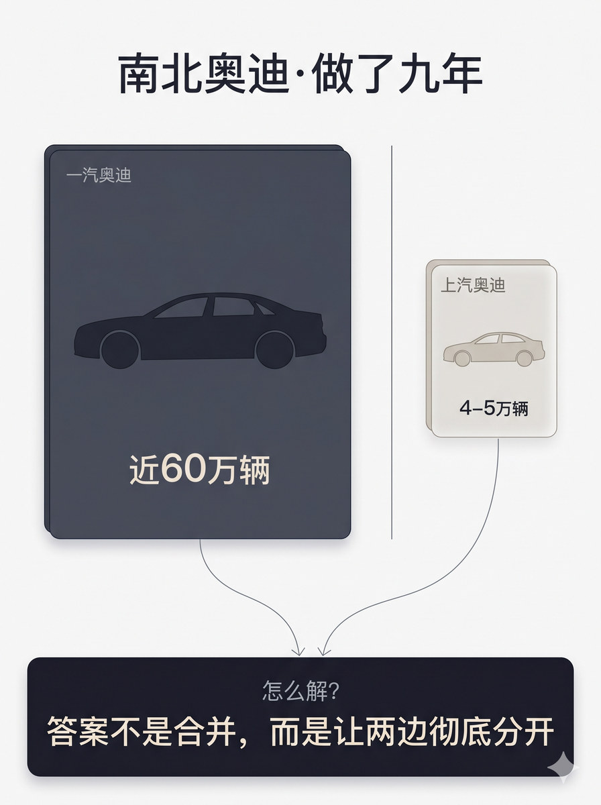
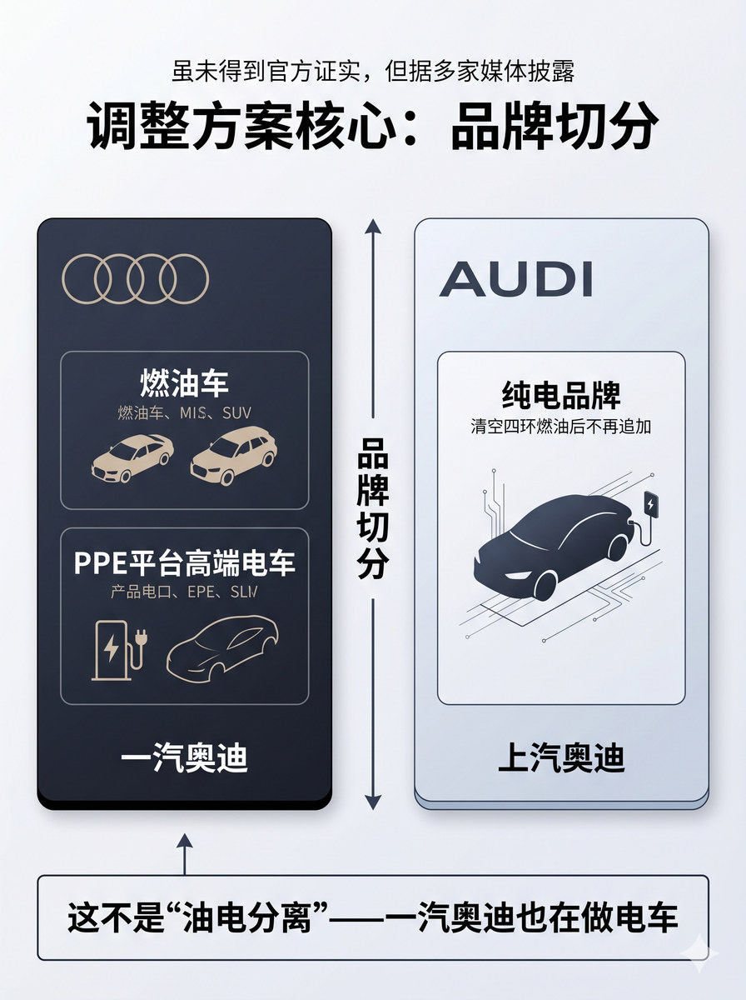
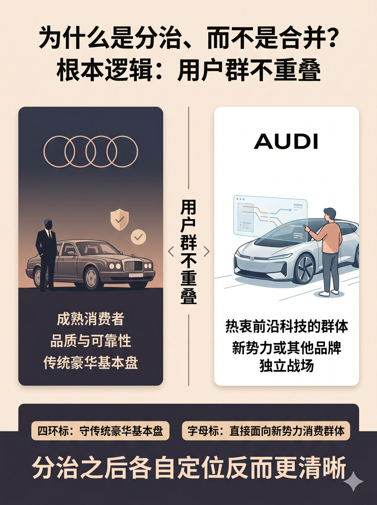

历史 Nano Banana 竖版短视频配图基线：双品牌、双渠道和身份区隔保持清晰，避免主体与关系混淆
# D3 分块段 01 Prompt 生成一张 3:4 竖版静态配图。 整体采用顶部标题 + 中部左右对照 + 底部结论的三区结构。 顶部居中放置标题"南北奥迪·做了九年"，字体适中不夸张。 中部主体区分为左右两栏。左侧是一张深色实心大卡片，占据主体区约八成宽度中的六成以上；卡片内部是一辆大型深色轿车轮廓剪影，剪影下方标注"近60万辆"，字体较大。卡片左上角标注小字"一汽奥迪"。右侧是一张浅色半透明小卡片，面积约为左侧的四分之一；卡片内部是一辆小型浅色轿车轮廓剪影，剪影下方标注"4-5万辆"，字体明显小于左侧。卡片左上角标注小字"上汽奥迪"。左右卡片之间用一条细竖线分隔。 左右两张卡片的下边缘各引出一条细弧线箭头，分别向左下和右下弯曲，汇聚到下方的一个宽幅横条容器两端。这个底部横条为深色底、略圆角，跨整个画面宽度。横条内上方是小字"怎么解？"，下方是醒目大字"答案不是合并，而是让两边彻底分开"。字色为浅色/白色。 图中只允许出现这些文字：南北奥迪、做了九年、一汽奥迪、近60万辆、上汽奥迪、4-5万辆、怎么解？、答案不是合并、而是让两边彻底分开。除这些文字外不要新增任何说明性文字、数据来源、时间标注、百分比或品牌名。 不要四环logo，不要AUDI字母标logo，不要柱状图、饼图或表格，不要真车照片，不要感叹号，不要水印，不要"AI生成"字样，不要无意义英文装饰。 整体视觉采用 clean isometric business schematic，modular business illustration with light 3D structural feel，rational and tidy layout。左右卡片有轻微立体托举感，底部答案区保持扁平宽幅以稳定重心。色调克制：左侧深灰或深蓝稳重，右侧浅灰或米白轻量，底部深色底白色字。分隔线细而清晰，汇聚箭头轻而准确。不要科技HUD化，不要过度等距透视使卡片变形，不要纯冷蓝灰压场。

# D3 分块段 02 Prompt 生成一张 3:4 竖版静态配图。 整体采用顶部标题区 + 中部左右对照 + 底部纠偏的三区结构。 顶部居中放置标题"调整方案核心：品牌切分"。标题上方放置一行更小的文字"虽未得到官方证实，但据多家媒体披露"，作为信源限定，不抢占视觉重心。 中部主体区分为左右两张等大的品牌卡片，中间用一条竖向细长分隔带隔开。左侧卡片为深色稳重色调，左上角有四环简化几何图形——四个交叠的细圆环，非官方logo；卡片内部上下排列两个子项：上方"燃油车"配轿车和SUV的小图标组合，下方"PPE平台高端电车"配充电接口和流线型车轮廓，每子项旁有小字产品名简称作为辅助。卡片底部标注"一汽奥迪"。右侧卡片为浅色科技感色调，左上角有"AUDI"字母标简化表达；卡片内部是单一主体——"纯电品牌"，用充电中的电动车剪影和科技感细线条表达，旁边小字标注"清空四环燃油后不再追加"。卡片底部标注"上汽奥迪"。 中轴分隔带是一条细竖线，中部标注"品牌切分"文字，上下各有一个对称的双向小箭头。 底部是一个宽幅横条，浅底色深色字，与上方主体区之间有清晰分割线。横条内文字为"这不是'油电分离'——一汽奥迪也在做电车"。横条左端有一个小箭头向上回指，指向左侧卡片的PPE电车子项区域。 图中只允许出现这些文字：调整方案核心、品牌切分、虽未得到官方证实但据多家媒体披露、四环标、一汽奥迪、燃油车、PPE平台高端电车、AUDI、上汽奥迪、纯电品牌、清空四环燃油后不再追加、这不是"油电分离"、一汽奥迪也在做电车。除这些文字外不要新增任何说明性文字、具体车型名称、销量数据或品牌名。 不要四环官方logo，不要AUDI官方字母标logo，不要真车照片，不要数据图表，不要感叹号，不要水印，不要"AI生成"字样，不要无意义英文装饰。 整体视觉采用 clean isometric business schematic，modular business illustration with light 3D structural feel。左右两张品牌卡片等大、有轻微立体托举感。左卡深色稳重传达传统豪华感，右卡浅色科技传达创新感，但不做成冷暖色对决。中轴分隔线细而清晰。底部纠偏区保持扁平，不分散对主体区的注意力。整体理性克制，不要科技HUD化，不要过度等距透视。

# D3 分块段 05 Prompt 生成一张 3:4 竖版静态配图。 整体采用顶部标题 + 中部左右双品牌定位卡 + 中轴关系 + 底部结论的四区结构。 顶部居中放置标题"为什么是分治、而不是合并？根本逻辑：用户群不重叠"。 中部主体区分为左右两张等大的品牌定位卡片，中间用一条细竖向分隔带隔开。 左侧卡片为深色稳重色调。卡片内是一个小场景：一位成熟商务人士的侧影，姿态沉稳地站在一辆经典豪华轿车旁。轿车旁有轻量图标——小盾牌和勾选标记，暗示品质与可靠性。卡片内有四环简化几何图形——四个交叠的细圆环、非官方logo，标注文字"成熟消费者""品质与可靠性""传统豪华基本盘"。 右侧卡片为浅色科技感色调。卡片内是一个小场景：一位年轻用户正在通过一块透明AR屏幕与一辆造型未来的电动车互动，屏幕上有简洁的数据流线条。卡片内有"AUDI"字母标简化表达，标注文字"热衷前沿科技的群体""新势力或其他品牌""独立战场"。 中轴分隔带是一条细竖线，中部醒目标注"用户群不重叠"文字，两侧各有一个向外分开的小箭头，强调两个用户群体走向不同方向、不会重叠。 底部是一个宽幅横条，深色底配浅色字。内部左右并列两个小标签："四环标：守传统豪华基本盘""字母标：直接面向新势力消费群体"。上方大字"分治之后各自定位反而更清晰"。 图中只允许出现这些文字：为什么是分治而不是合并、根本逻辑、用户群不重叠、成熟消费者、品质与可靠性、传统豪华基本盘、AUDI、热衷前沿科技的群体、分治之后各自定位反而更清晰、四环标守住传统豪华基本盘、字母标直接面向新势力消费群体。除这些文字外不要新增任何说明性文字或其他品牌名。 不要四环官方logo，不要AUDI官方字母标logo，不要真车照片，不要感叹号，不要水印，不要"AI生成"字样，不要无意义英文装饰。 整体视觉采用 soft narrative structural editorial，gentle editorial illustration with modular clarity，warm but restrained。两张定位卡内的人物小场景柔和克制，不夸张情绪化。中轴关系标注清楚。底部结论区以稳定深色收束。不要做成广告海报风格，不要暖色过满。
